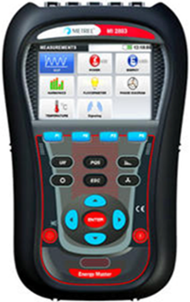

Analizador de redes, homologado por osinergmin
El analizador de redes eléctricas es un instrumento que permite analizar diferentes propiedades de una instalación. Se centra especialmente en los parámetros de dispersión y permiten llevar un control exacto del consumo de energía eléctrica.
¿Que se entiende por calidad de energía?
Se entiende por calidad de la energía cuando la energía eléctrica es suministrada a los equipos y dispositivos con las características y condiciones adecuadas que les permita mantener su continuidad sin que se afecte su desempeño ni provoque fallas a sus componentes.
Parámetros que mide el analizador de redes
Flickers: variación rápida de tensión que se presenta de forma repetitiva y permanente.
Armónicos: distorsión la forma de onda sinusoidal de la corriente eléctrica provocada por un aparato que consume energía de forma no lineal.
Distorsión armónica (THD) de corriente y tensión: suma de la distorsión producida por todos los armónicos.
Valor eficaz: el valor eficaz de una corriente alterna es el valor que tendría una corriente continua que produjera la misma potencia al aplicarla sobre la misma resistencia.
Potencia y factor de potencia: la potencia es la cantidad de energía eléctrica que transporta el circuito por unidad de tiempo y el factor de potencia permite comparar la energía extraída de la red con la energía útil que obtenemos tras su paso por la red.
Funciones de Medicion:
Cumplimiento de la norma de calidad de la energía IEC 61000-4-30 Clase A.
Análisis completo de calidad de energía según la norma EN 50160, incluida la señalización y los interarmónicos.
Tensión: TRMS, pico, factor de cresta, Corriente: TRMS, pico, factor de cresta
Energía (activa, reactiva, generada, consumida)
Potencia (activa, reactiva, aparente).
Mediciones de potencia según IEEE 1459 (activa, no activa, fundamental, armónicos, desequilibrio de cargas).
VFD (variadores de frecuencia, 5 Hz - 110 Hz), 400 Hz.
Desequilibrio, medición de flicker.
Análisis de armónicos e interarmónicos hasta el armónico 50, medición de THD.
Captura y registro de eventos en el suministro eléctrico (desconexiones, interrupciones, subidas, caídas).
Monitorización y registro de corrientes de arranque.
Presentación, captura y registro de formas de onda/arranque.
Registro de sobretensiones transitorias.
Análisis de la calidad de la energía según la norma EN 50160, IEEE 519.
Medición de temperatura.
Mediciones de eficacia del inversor fotovoltaico.
Factor de potencia, tg fi.
Beneficios:
Ahorro de energía eléctrica
Descubrir y evitar los excesos de consumo(kWh).
Análisis de curvas de carga para localizar los puntos de máxima demanda energética.
Detección de necesidades en la instalación, como la necesidad de una batería de condensadores, mantenimiento de motores, transformadores, circuitos electricos, desbalances, filtros de armonicos, calidad de la energia, etc.
Detección de fraude en contadores energéticos.
Prevención de riesgos en la red eléctrica
Son aparatos de gran utilidad para la realización de mantenimientos periódicos de la red eléctrica en baja y media tensión. Miden curvas de arranque en motores, detección de saturación en el transformador de potencia, calidad insuficiente del suministro eléctrico.
Solución de problemas en la red
Con el uso de los analizadores de redes es posible solventar problemas de fugas diferenciales, disparos ocasionales, resonancias, armónicos, recalentamiento de cables, desequilibrio en las fases.
Permite un diseño adecuado de los filtros activos y pasivos de armónicos, así como filtros de variadores de velocidad.